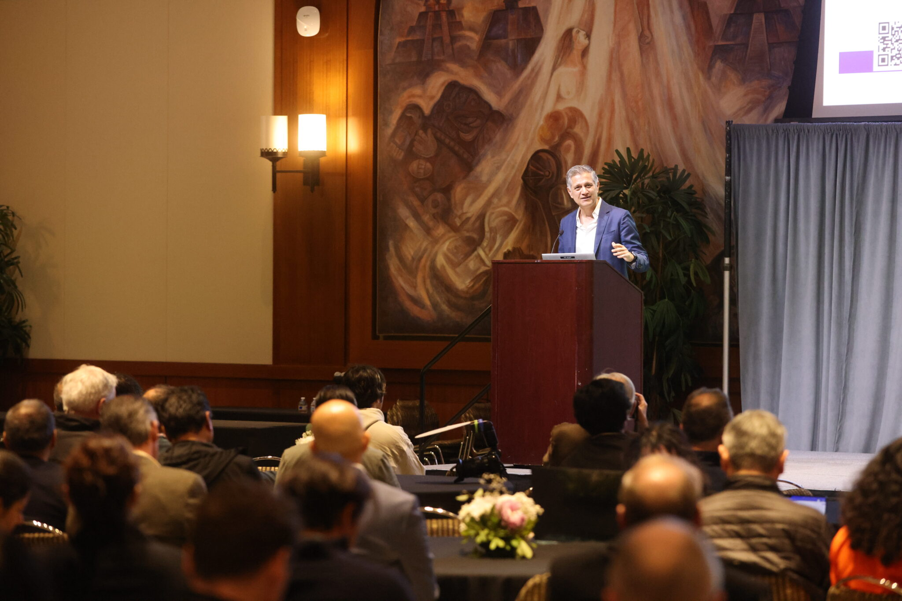
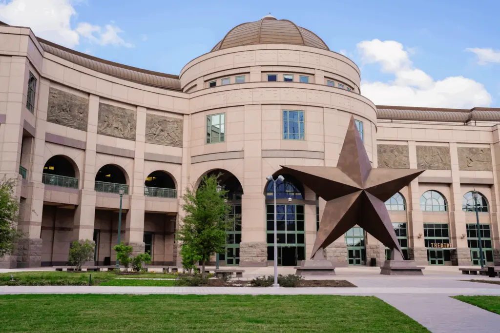
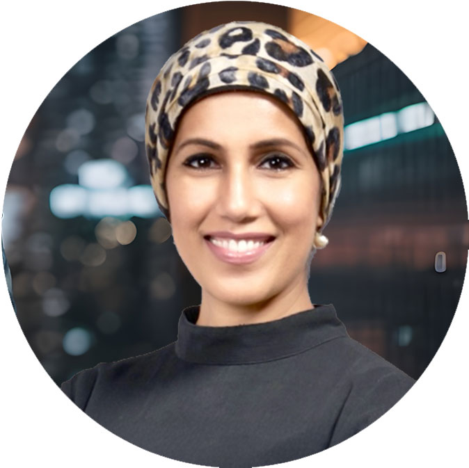

TechCon Global emerged from a vision to empower future innovators and create inclusive opportunities across the ecosystem. What began as a single regional gathering has evolved into a global movement—bridging communities, breaking down barriers, and shaping the future through dynamic innovation events and meaningful engagement. Driven by purpose and passion, we continue to expand our reach, uniting bold thinkers, visionary founders, and impact-driven investors, guided by a consistent innovation approach that turns ideas into outcomes. Driven by purpose and passion, TechCon Global continues to expand its reach, uniting bold thinkers, visionary founders, and impact-driven investors to shape the next wave of innovation.
 History
Mission
Empower Entrepreneurs
Inspire the next generation by providing access to opportunities, resources, and real-world insights.
Drive Investment
Channel funds into transformative projects and emerging industries.
